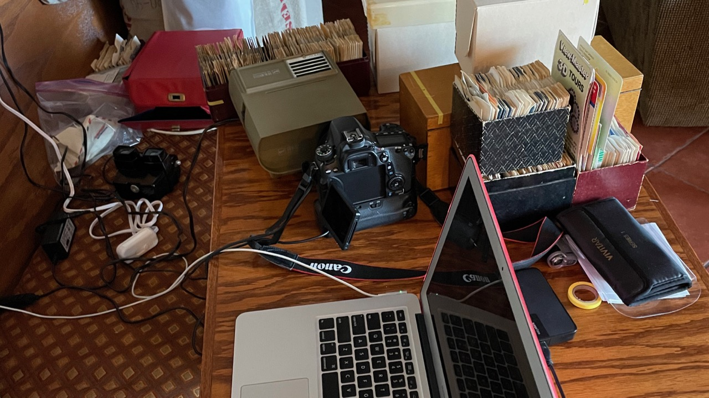

CONTACT - You can reach Dave here: DaveRMachin@gmail.com.The initial collection was a few personal viewmaster reels - but those are quite expensive to collect. The main collection really began with a set of old single-reels and viewer - things like Yosemite and the Grand Canyon.
To organize the collection, Dave started entering the reels into an Airtable online database. Pretty soon the database had over one thousand entries!
Once the reels were entered the next logical step was to find a way to digitize all the images on the reels and include them as well. Dave spent a few weeks experimenting with various ways to digitize reel images. The goal was to digitze them very quickly but with the a reasonable level of quality.
In the end Dave came up with a technique of pointing a DSLR camera directly into a 2D view-master projector and taking a photograph of each image directly.
This method allows each reel to be digitized very quickly since the projector can advance the images and a remote release triggers the camera. It still took several months to digitize thousands of images and load them into the database.
This database website is written in javascript using the airtable API to query the database and render the results. Kudos to Airtable - their product is very robust, the API easy to use, and this development has been a pleasure to do.
See below for a few quiz and word-puzzle games based on the View-Master reel data! Word-MasterMIND is based on the "Master Mind" game, which is what the popular Wordle game is base on. So, it's Wordle - but really it's "Master Mind". Word-Snake is a little like Boggle, but really more something I made up. Then there's View-Master QUIZ - where you have to guess the reel title from pictures; or vice-versa - it's challenging! All these games have high score leaderboards - see how well you do!